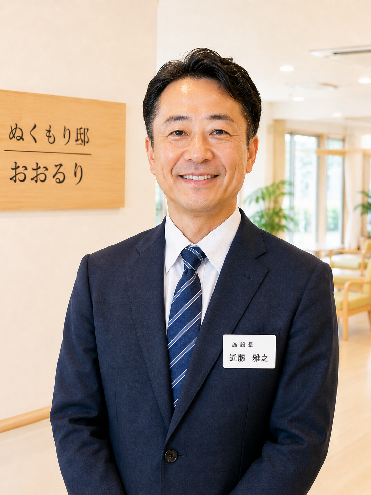

ぬくもり邸 おおるり 施設長 近藤 雅之「命の尊厳」と「食の喜び」を何よりも大切に。
皆様、はじめまして。「ぬくもり邸 おおるり」施設長の近藤と申します。
私たちがこの施設を立ち上げるにあたり、最も大切にした理念、それは「命の尊厳」を最後まで守り抜くということです。高齢化が進む現代社会において、単に安全な場所を提供するだけではなく、お一人おひとりが歩んでこられた人生に敬意を払い、心安らかに過ごせる「終の棲家（ついのすみか）」でありたいと願っております。
そのために、私たちが特に力を入れているのが「毎日の食事」です。年齢を重ね、身体機能が衰えていく中で、「食べる喜び」は最後まで残る数少ない楽しみの一つです。しかし、従来の介護施設では、効率やコストが優先され、味気ない食事が提供されることも少なくありませんでした。
当施設では、その常識を変えたいと考えています。専属の栄養士と調理スタッフが連携し、栄養価が高く、消化吸収に優れた独自のメニューをご提供しています。これは単なる栄養補給ではなく、皆様の「生きる力」そのものを支えるための、私たちの挑戦です。
充実した設備と、24時間体制の温かなケア、そしてこだわりの食事。これらすべてを通じて、ご入居者様はもちろん、ご家族の皆様にも「ここを選んでよかった」と心から思っていただけるよう、職員一同、誠心誠意努めてまいります。
ご見学やご相談は随時承っております。どうぞお気軽に、私たちの「ぬくもり邸」へ足をお運びください。
施設長 近藤 雅之